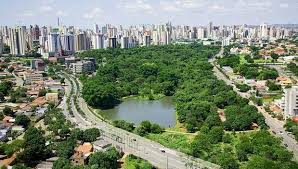

Claro! Goiás é um estado localizado na região Centro-Oeste do Brasil. É conhecido por sua rica diversidade natural, com uma mistura
de cerrado, áreas de floresta e rios que proporcionam paisagens bastante bonitas. A capital do estado é Goiânia, uma cidade
moderna e vibrante, cheia de cultura, música e gastronomia deliciosa. Goiás também tem uma forte tradição na agroindústria,
especialmente na produção de soja, milho e carne bovina. Além disso, o estado é famoso por suas festas tradicionais, como a Festa
do Divino e o rodeio, que refletem a cultura sertaneja. É um lugar cheio de história, belezas naturais e uma população acolhedora!

voltar